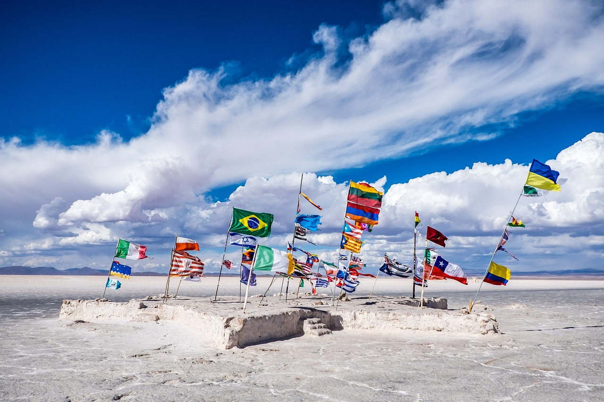

El presente formulario tiene como propósito principal, la recopilación de información de manera estructurada y organizada, de esta manera se divide en las siguientes áreas:

DATOS GENERALES
Los aspectos generales, son los elementos fundamentales que caracterizan la identidad de un pais, como el funcionamiento y estructura.
- Geografía: Incluye ubicación, clima, relieve, recursos naturales y biodiversidad.
- Demografía: Datos sobre población, densidad, grupos étnicos, idiomas y tasas de crecimiento.
- Cultura: Tradiciones, costumbres, arte, gastronomía, religión y valores de la sociedad.
- Medio Ambiente: Políticas de conservación, impacto ecológico y gestión de recursos naturales.
Se refiere a la estructura administrativa y organizativa que gestiona los asuntos públicos dentro de una determinada localidad, como un municipio, una provincia o una comunidad autónoma.
- Órganos de Gobierno: Son las entidades responsables de tomar decisiones y ejecutar políticas. Ejemplos comunes incluyen alcaldías, concejos municipales y gobernaciones.
- Autoridades Locales: Funcionarios electos o designados, como alcaldes, concejales y representantes comunales, que trabajan en la planificación y administración de recursos.
- Administración Pública Local: Incluye organismos encargados de la gestión operativa, como departamentos de educación, salud, infraestructura y seguridad.
Sse refiere al conjunto de procesos, sectores y dinámicas que impulsan la producción, distribución y consumo de bienes y servicios dentro de su territorio. Es fundamental para el desarrollo y bienestar de la sociedad, ya que influye en el empleo, el crecimiento económico y la estabilidad financiera.
Componentes principales:
- Primario: Agricultura, pesca, minería y explotación de recursos naturales.
- Secundario: Industria, manufactura y construcción.
- Terciario: Servicios, comercio, turismo y tecnología.
Se refiere a la conexión entre distintos puntos geográficos a través de redes de transporte terrestre, como carreteras, caminos, puentes y túneles. Su propósito es facilitar el flujo de personas, bienes y servicios, impulsando el desarrollo económico, social y territorial.
- Infraestructura: Incluye vías pavimentadas, caminos rurales, carreteras principales y secundarias, así como puentes que mejoran la conectividad.
- Movilidad y transporte: Abarca el flujo de vehículos, logística de transporte, accesibilidad para peatones y conexión entre centros urbanos y rurales.
- Planificación y desarrollo – Se vincula con la gestión territorial, estudios de impacto ambiental y estrategias para mejorar la eficiencia de las redes viales.
Son estrategias de gestión integral del agua y los recursos naturales dentro de una cuenca hidrográfica a nivel nacional. Estos planes buscan garantizar la sostenibilidad ecológica, la disponibilidad del agua para distintos usos y la prevención de impactos negativos como la contaminación o la erosión.
- Ordenamiento territorial: Definen zonas de protección, uso productivo y áreas de conservación dentro de una cuenca.
- Gestión de recursos hídricos: Regulan el aprovechamiento del agua para consumo humano, agrícola, industrial y energético.
- Sostenibilidad ambiental: Incluyen acciones para prevenir la deforestación, la erosión del suelo y la contaminación de ríos y lagos.
Son los elementos que provienen de la naturaleza y que pueden ser utilizados para el desarrollo económico, social y ambiental. Se dividen en varias categorías:
- Renovables: Aquellos que pueden regenerarse con el tiempo, como el agua, la energía solar, los bosques y la biodiversidad.
- No renovables: Recursos con disponibilidad limitada, como minerales, petróleo, gas natural y algunos tipos de suelos fértiles.
- Hídricos: Ríos, lagos, acuíferos y mares, fundamentales para el abastecimiento de agua, la agricultura y la energía hidroeléctrica.
- Biológicos: Flora y fauna nativa, esenciales para la biodiversidad y sectores como la agricultura y la medicina.
- Energéticos: Fuentes de energía como hidrocarburos, biomasa, viento y sol, clave para la producción y el consumo energético.
- Geológicos: Minerales, rocas y materiales utilizados en construcción, tecnología e industria.